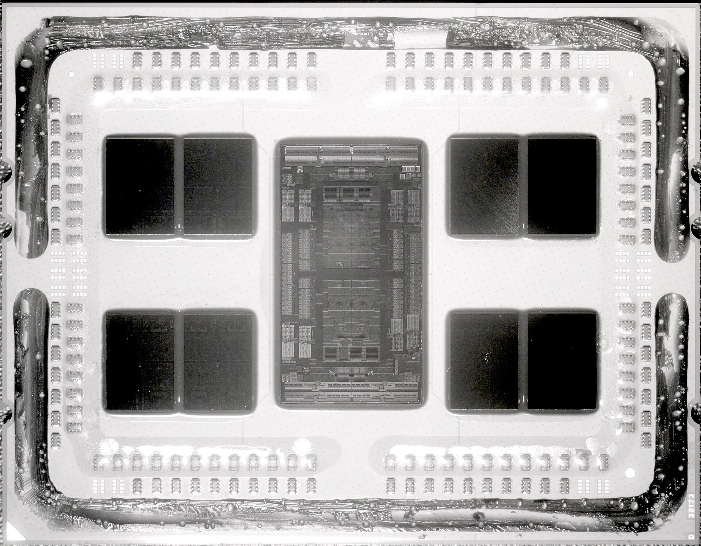

Share prices are closing prices from StatMuse and StockAnalysis, not adjusted for anything other than splits. Market-share figures come from Mercury Research, as reported by the trade press; Mercury measures "unit share" (chips shipped) and "revenue share" (money earned) separately, and I label which is which. Some of the history and anecdotes draw on three video profiles of AMD and Lisa Su, listed in the Sources. Figures change every earnings season. Educational only, not investment advice.
Key findings
- AMD's lowest close was $1.62 in July 2015, nine months into Lisa Su's time as CEO. Its whole market value was under $2 billion.
- Its near-death came from two directions: the $5.4 billion ATI purchase in 2006, much of which it later wrote off, and a collapse in server chips, where its share fell from about 26% in 2006 to 1–2% by 2018.
- The comeback ran on the Zen chiplet design (2017) and EPYC server chips. By early 2026 AMD earned a record 46.2% of all x86 server-chip revenue.
- The Xilinx deal was paid in shares, so AMD's rising stock lifted its value from about $35 billion when agreed to about $49 billion when it closed in 2022.
- AI is now the main event. Data-centre sales hit $8.5 billion in July–September 2026, nearly two-thirds of revenue, and AMD's value passed $1 trillion on 21 September 2026. Its shares peaked at $649.42 on 6 October, then fell about 35% in a November chip selloff.
- Its newest bet is on inference, running AI models rather than training them. In November 2026 AMD completed its purchase of Taalas, a Toronto start-up that etches a whole model into a chip, for about $2.9 billion. Taalas's first chip runs one small model at roughly 17,000 tokens a second for a single user, about 70 times what a top GPU manages.
Part 1Two cousins, two chip giants
The two chip designers riding the AI wave hardest are Nvidia and AMD, and the people running them, Jensen Huang and Lisa Su, are distant relatives. Both were born in Tainan, Taiwan. Su has confirmed the family link in interviews, and said they didn't grow up together or meet at family dinners. Nvidia turns up all over this series; this page is about the other one.
Most people know AMD for gaming graphics cards. That undersells it. AMD is one of only two companies that matter in PC and server processors (CPUs), and one of two that matter in standalone graphics chips (GPUs). For most of its half-century, the rival it could never shake wasn't Nvidia. It was Intel.

Part 2The timeline
Scroll through fifty-seven years of AMD. On the left, AMD’s and Intel’s share prices from 2002, drawn up to the moment you’re reading about; on the right, what happened.
Born in Intel’s shadow
Both companies trace back to Fairchild Semiconductor, often called the cradle of Silicon Valley. Its best-known founders, Robert Noyce and Gordon Moore, left to start Intel in 1968. A year later Fairchild’s sales chief, Jerry Sanders, started AMD. The two were uneven from the start: Intel had the famous scientists and easy money, while AMD was one of dozens of small chip start-ups scrapping for funding. One of Sanders’s early backers, according to the video profiles, was Noyce himself.
AMD’s first products were logic chips, many of them second-source versions of other companies’ designs, sold on a promise of stricter testing than the originals. Its first chip of its own design, the Am2501 counter, followed in 1970.
Going public by copying Intel
AMD went public in 1972. Its early business was making cheaper, compatible versions of other companies’ chips. In 1975 it released the Am9080, a copy of Intel’s 8080 processor that AMD’s engineers worked out by studying the chip itself.
Rather than fight, Intel signed a patent cross-licence with AMD in 1976, giving it rights to make Intel-compatible processors legally. That agreement is the root of AMD’s place in the x86 business today. By 1980 AMD was a well-established chipmaker, still far smaller than Intel.
Riding in the slipstream
When IBM built its PC it didn’t want to depend on a single chip supplier, so Intel agreed to license its x86 designs to a “second source.” IBM launched its PC in August 1981 with an Intel processor; AMD signed the second-source deal in February 1982 and built Intel-compatible chips alongside Intel as PC sales took off.
A cyclist riding close behind another uses far less energy, because the leader takes the wind. For years AMD rode behind Intel, making Intel's own designs as a licensed second supplier. The catch: you can't win a race from the slipstream. Sooner or later you have to pull out and pedal into the wind yourself.
The licence war
The second-source deal soured when Intel decided to keep its next chip, the 386, to itself. In 1987 the two companies went to arbitration over whether AMD’s licence covered it, a fight that lasted about seven years. A retired judge ruled largely in AMD’s favour in 1992, granting it a licence to the 386 design but not to later chips.
AMD launched its own Am386 in 1991. In January 1995 the companies settled everything: AMD got a royalty-free right to make 386 and 486 chips, provided it didn’t copy Intel’s internal microcode, and agreed not to copy the microcode of the Pentium. From then on AMD would have to design its own chips, which led straight to NexGen and the Athlon.
Pulling out ahead
AMD eventually pulled out. It bought the chip-design firm NexGen in 1996 and in 1999 launched the Athlon, faster than Intel’s equivalent and cheaper. In 2000 it made close to $1 billion in profit. In 2003 it launched Opteron for servers, and by mid-2006 Opteron held about 26% of the x86 server market. By the end of 2006 AMD had a quarter of all x86 chips.
The share-price chart starts in 2002; earlier year-end prices for both companies are not shown.
The bet that nearly killed it
A computer needs a CPU, the general-purpose brain, and a GPU, the graphics processor. AMD saw a prize in owning both, and with Nvidia too big and too expensive it bought the other serious GPU maker, ATI, for about $5.4 billion: roughly $4.3 billion in cash, much of it borrowed through a $2.5 billion loan, plus 58 million AMD shares.
The strategy was sound, and it’s why AMD can make graphics chips today. The price wasn’t: within about a year AMD began writing ATI down, by billions of dollars over 2007 and 2008. Days after the deal was announced, Intel launched its fast, power-efficient Core 2 chips and pulled away again.
Selling the factories
Now AMD was designing and manufacturing at the same time, with debt approaching $5 billion. In 2009 it spun off its factories into a new company, GlobalFoundries, and kept only chip design. That looked like retreat and turned out to be wise, because it later let AMD use whichever factory was best. Its shares ended 2008 at $2.16.
Intel pays up
In May 2009 the European Commission fined Intel €1.06 billion for using rebates and payments to keep PC makers from using AMD chips. In November, Intel settled all of AMD’s antitrust and patent claims by paying AMD $1.25 billion in cash and agreeing to a set of rules on rebates that would last ten years.
The money arrived when AMD needed it most. Neither side admitted wrongdoing, but the deal put a price on years in which AMD said its chips had been locked out of the market.
A flop and a slide
In January 2011 AMD’s board pushed out its chief executive, Dirk Meyer; Rory Read took over in August. The year brought one success and one failure. The “APU” chips put a CPU and a GPU on one die, the original logic of buying ATI, and sold reasonably well. The Bulldozer desktop chips, launched in October, were slower than Intel’s and often slower than AMD’s own older chips.
In 2012 AMD paid about $334 million for SeaMicro, a maker of dense servers, a bet it later shut down. Layoffs followed, and the shares fell from about $8 at the end of 2010 to $2.40 at the end of 2012.
Consoles, and selling the headquarters
The bleeding continued and server share fell to almost nothing. In 2013 AMD sold its Austin campus and rented it back to raise about $164 million in cash.
The same year brought the lifeline: AMD’s custom chips went inside both new consoles, Sony’s PlayStation 4 and Microsoft’s Xbox One. Only AMD could offer a CPU and a capable GPU on a single chip, thanks to ATI. Console sales gave it steady income through the lean years ahead.
Lisa Su takes over
Lisa Su became CEO in October 2014. She is an MIT-trained electrical engineer with a doctorate, who worked on chips at Texas Instruments, IBM and Freescale before joining AMD in 2012. She told Bloomberg the job was a dream come true, even though she inherited a company trading around $3.
Su and Jensen Huang, who runs Nvidia, are distant relatives, both born in Tainan, Taiwan; she has said they didn’t grow up together.
The bottom: $1.62
Nine months into Su’s tenure, AMD’s shares closed at $1.62, its lowest ever. The whole company was worth under $2 billion. After the basics (simplify the company, keep key customers, cut costs) Su made two bets, each hard on its own and far harder together.
Raising cash, waiting for Zen
With Zen still a year away, AMD raised money where it could. It sold 85% of its chip assembly and test plants in Penang and Suzhou to Nantong Fujitsu Microelectronics for about $371 million, and licensed server-chip technology to a Chinese joint venture, THATIC, for about $293 million in fees over several years.
Its Polaris graphics cards (the Radeon RX 480) went after the mid-range market. Investors began to bet on the turnaround early: AMD’s shares roughly quadrupled during 2016, from $2.87 to $11.34.
Bet one: Zen
AMD had drifted into the cheap end of the market. Su aimed it at top-end performance instead. The payoff was Zen: a clean-sheet design later built from small dies called “chiplets,” stitched together into bigger processors. Chiplets are cheaper to make, because a defect ruins one small die instead of one huge one. AMD had aimed for 40% more work per clock cycle; it delivered 52%, and the first Ryzen chips matched Intel’s eight-core Core i7 at around half the price.

Bet two: consoles and the data centre
Su also widened the business. Because the ATI deal gave AMD both CPUs and GPUs, it could build a whole console chip, and it won the PlayStation and Xbox (and later the Steam Deck): steady income through the lean years.
The bigger prize was the data centre, which Intel owned almost entirely. AMD’s pitch for its EPYC server chips was total cost of ownership: for a data centre, the chip’s price is the small part, and power, cooling and space over years of nonstop running are the rest. AWS, Microsoft Azure and Google Cloud all began using EPYC.
Intel trips
Much of AMD’s rise came from Intel’s stumble. Intel’s move to a 10-nanometre manufacturing process ran into deep problems, leaving it on 14 nanometres for years, and in 2019 it wrote to customers to apologise for chip shortages. That’s the risk of making your own chips: when the factory stalls, the whole product line stalls. AMD, without factories, simply used the best one, and from 2019 that was TSMC’s 7-nanometre process.
The server share climbs
From about 1–2% of x86 server chips in 2018, AMD climbed past a third of units shipped and nearly half the revenue by 2026.
Zen 3, and a deal for Xilinx
The pandemic set off a boom in PCs and cloud computing, and AMD was ready for it. In November 2020 its Zen 3 chips took the lead over Intel even in single-threaded tasks such as gaming, long Intel’s last stronghold. A month earlier AMD had agreed to buy Xilinx. Its shares doubled during the year, from $45.86 to $91.71.
The shortage boom
A global chip shortage meant AMD could sell nearly everything TSMC made for it. Revenue rose 68% to about $16.4 billion, and the shares ended the year at $143.90. The Xilinx deal waited on regulators in the US, Europe and China.
The Xilinx trick, and passing Intel
To widen once more AMD bought Xilinx, the leader in FPGAs, chips that can be rewired after they’re made. It paid in its own shares, a fixed 1.7234 AMD shares per Xilinx share. Announced in October 2020 at about $35 billion, by the close on 14 February 2022 AMD’s stock had risen about 40%, so the same ratio was worth about $49 billion. When your stock is soaring, it becomes a currency.
With the Xilinx shares added, AMD’s market value passed Intel’s for the first time. On the chart the two lines don’t cross, because they show each company’s own share price, not its size.
An exascale first, then a PC bust
In May 2022 Frontier, a US government supercomputer built with AMD EPYC processors and Instinct accelerators, became the first machine officially measured at over a quintillion calculations a second.
Then the pandemic PC boom ended. Sales of PCs and their chips fell sharply, and AMD’s shares lost more than half their value in 2022, ending at $64.77.
Racing into AI
ChatGPT, released at the end of 2022, set off a rush for AI chips, and Nvidia took almost all of it. AMD answered in December 2023 with the Instinct MI300X, an accelerator with more memory than Nvidia’s H100, which mattered for running large models. Its shares more than doubled in 2023, to $147.41.
The AI race
The fight with Nvidia is a different contest from the one with Intel. In AI accelerators, demand has run far ahead of supply, so buyers want a second supplier. AMD’s MI300 chips passed $5 billion in sales in 2024, mostly to Microsoft and Meta.
Buying the rack builder
AI customers increasingly buy whole racks, not single chips. In March 2025 AMD completed its purchase of ZT Systems, a builder of data-centre infrastructure for the biggest cloud companies, agreed the year before at about $4.9 billion; it kept the design teams and set out to sell the factories. In June it launched the MI350 accelerators and previewed Helios, its own full-rack system.
The OpenAI deal
AMD signed its biggest AI deal: OpenAI agreed to deploy 6 gigawatts of AMD’s Instinct chips over several generations, starting with 1 gigawatt of the MI450 series in the second half of 2026. In return AMD gave OpenAI a warrant to buy up to 160 million AMD shares for a cent each, released as deployments happen and as AMD’s share price hits targets reportedly up to $600. It’s the Xilinx trick in reverse: this time AMD used its shares to win a customer.
Intel’s comeback rally
Intel had its own surge. Its 18A chips entered high-volume production in Arizona in January, it gave strong forecasts in April, and in June reports of a preliminary chip-making deal with Apple (not confirmed by either company) sent the shares to a record. Intel closed at about $141 on 22 June, nearly four times its price at the start of the year.
The memory wall
Training a model happens once; inference, running it to answer a question, happens on every request, so over a model’s life it usually costs more. A request is chopped into tokens, routed, and batched with others, then processed in two phases.
| Prefill | Decode | |
|---|---|---|
| What it does | Reads your whole prompt at once and stores what it worked out in a KV cache | Writes the answer one token at a time, looking back at the KV cache on every step |
| What limits it | Compute: raw arithmetic | Memory bandwidth: moving data |
| What you notice | The wait before the first word (time to first token) | How fast the words stream (time between tokens) |
| When it dominates | Long prompt, short answer | Short prompt, long answer: chat, code, agents |
Decode is slow because on a GPU the model’s weights sit in high-bandwidth memory beside the processor, not inside it, so for every token the chip streams the whole model in. For Llama 3.1 8B (about 16 GB at 16 bits) on an H200 (4.8 TB/s), that caps one user at about 300 tokens a second; Nvidia measures about 230.
Buying Taalas
Chipmakers have tried three ways around the memory wall. Toronto start-up Taalas took the most radical: build the model into the chip. Its HC1, announced in February 2026, holds all of Llama 3.1 8B on one TSMC 6nm die with 53 billion transistors, and runs at about 17,000 tokens a second per user by Taalas’s count (independent testers measured 15,000–16,000), about 70 times the H200.
| Approach | Idea | Catch |
|---|---|---|
| GPUs (Nvidia, AMD) | Weights in HBM next to the chip; batch many users to share each trip to memory | Every token still waits on memory: about 230 tokens a second per user on an H200 for an 8B model |
| Groq | Keep the weights in fast on-chip memory (SRAM) | About 230 MB of SRAM per chip, so a large model is spread over hundreds of chips working in lockstep; a 70B model needed 576 of them |
| Taalas | Build the weights into the chip itself as fixed circuitry next to the compute: "the model is the chip" | One model only, some quality loss from squeezing the weights, and a new model means a new chip |
The catch: it runs one model only, with some quality loss from squeezing the weights, and a new model means a new chip, though Taalas says that takes about two months. The bet is an old one in chips: once a workload stops changing, specialised silicon eats it, as it did with Bitcoin mining and video decoding. Taalas built the HC1 with 24 people for about $30 million. In August 2026 AMD agreed to buy it; AMD’s filing values the deal at about $2.9 billion in cash and stock, including up to about $1.4 billion that depends on conditions being met.
A trillion dollars
In the third quarter AMD began shipping MI455X chips in volume inside full-rack “Helios” systems, naming Anthropic, Meta, Microsoft, OpenAI and Oracle as early customers. On 21 September the shares closed at $615.52, lifting AMD’s value past $1 trillion, the fourth US chip company to get there after Nvidia, Broadcom and Micron.
The peak, and Intel’s fall
AMD’s record close came on 6 October, at $649.42. Intel went the other way: on 30 October it fell 28.6% in a day after forecasting weaker fourth-quarter revenue, citing supply shortages and a prolonged PC slowdown.
You are here
AMD completed the Taalas deal on 17 November, putting its technology into the Instinct roadmap alongside AMD’s GPUs, CPUs, ROCm software and Helios racks. Reported ideas around the deal, not AMD announcements, include GPUs handling prefill and Taalas chips decode, and a second-generation chip of around 20 billion weights.
Meanwhile chip stocks sold off on doubts about how long AI spending can last, regulation fears and stretched valuations. By 20 November AMD had closed at $424.39, about 35% below its October peak, and Intel at $51.28, nearly two-thirds below its June record.
Part 3What it adds up to
Nvidia is still far ahead, with CUDA, the software most AI developers build on, making it painful to switch. AMD is a strong, fast-growing number two, not yet a challenger for the top spot, and its November slide shows how much of its value now rides on AI spending.
The lesson runs through this whole series: in chips, leadership is rented, not owned. A new architecture or a manufacturing slip can topple the leader within a few years, so whoever is on top has to keep betting heavily on the next five. AMD kept betting when it was nearly broke. Intel slowed down when it was on top. 2026 showed how fast it can swing both ways.
A GPU is fast at maths and slow at fetching. Taalas's answer is to stop fetching.
If you're trying to judge whether AMD's comeback lasts, ask two things.
Can AMD's software catch up with Nvidia's CUDA, or only its chips?
What happens to AMD if its AI customers run short of money, or of power for their data centres?
NotesSources
Each number and where it comes from.
- Timeline chart: year-end closing share prices 2002–2025 for AMD and Intel from StatMuse (AMD, Intel), plus AMD’s $1.62 low (27 July 2015); 2026 daily closes (AMD $615.52 on 21 Sep, $649.42 on 6 Oct, $424.39 on 20 Nov; Intel $127.39 on 24 Sep, $51.28 on 20 Nov) from StockAnalysis (AMD, Intel); Intel’s record close of $140.94 on 22 June 2026 from CompaniesMarketCap. Earlier prices are not shown because I couldn’t find year-end figures that reconcile across sources. Lisa Su becoming CEO in October 2014 and her career: IEEE Spectrum, CNBC.
- $1 trillion on 21 September 2026 at a $615.52 close, fourth US chipmaker: TweakTown, Channel Insider, Motley Fool.
- Filling the timeline’s middle years. 1970s (IPO in 1972, the Am9080 in 1975, the 1976 cross-licence), Meyer’s exit and Read’s arrival (2011), Bulldozer and the APUs, SeaMicro (2012), the PS4 and Xbox One chips (2013), Zen 3 (2020), Frontier (2022) and MI300X (2023): Wikipedia, “Advanced Micro Devices” and the sources it cites. The 1987–1995 licence arbitration and January 1995 settlement: CPU Shack, Electronic Design. The 2009 settlement ($1.25 billion and conduct rules to 2019): AMD, IEEE Spectrum. The 2016 plant sale (about $371 million) and THATIC licence (about $293 million): AMD, AMD 10-K 2016. ZT Systems completed 31 March 2025: AMD. Year-end share prices in these cards: StatMuse, as above.
- Intel’s 2026: 18A in volume production, the April forecast and the reported Apple deal behind the June record: Invezz, Nasdaq/Motley Fool; the 28.6% fall on 30 October and the November selloff: IBTimes, 24/7 Wall St., Motley Fool.
- 2006 market shares (Opteron 25.9% of x86 servers in Q2; AMD 25.5% of all x86 by Q4): eWeek, eWeek.
- ATI acquisition, about $5.4 billion, $2.5 billion term loan: AMD 8-K press release (SEC), AMD pro forma financials (SEC); write-downs: Ars Technica, Los Angeles Times.
- Austin campus sale and leaseback, about $164 million (2013): AMD.
- Zen (2017), its 40% target and 52% result, chiplets, Zen 2 on 7nm: Wikipedia, Tom's Hardware.
- Server share, Mercury Research: about 1–2% in 2018 (Wccftech); 17.6% unit share Q4 2022 and 23.1% Q4 2023 (Tom's Hardware, The Register); 25.1% Q4 2024 (Fudzilla); 28.8% Q4 2025 and 33.2% Q1 2026 (Heise); 34.5% Q2 2026 (Tom's Hardware); revenue share 33% Q1 2024, 39.4% Q1 2025 (Wccftech), 46.2% Q1 2026 (TechPowerUp).
- Xilinx all-stock deal, 1.7234 ratio, about $35 billion at announcement (Oct 2020) and about $49 billion at close (14 Feb 2022): AMD press release, AnandTech, Reuters via Yahoo. AMD passing Intel's market value in 2022: CNBC.
- MI300 above $5 billion in 2024: CRN, DataCenterDynamics.
- OpenAI deal, 6 gigawatts, 1 gigawatt of MI450 from the second half of 2026, warrant for up to 160 million shares: AMD newsroom; one-cent exercise price and share-price targets up to $600: Tom's Hardware.
- Q2 2026 data-centre revenue $6.7 billion; Q3 2026 revenue $13.4 billion, data centre $8.5 billion (up 97%), MI455X and Helios customers, about $17 billion Q4 guidance: AMD Q3 2026 results (SEC), ServeTheHome, Channel Insider.
- Inference phases (prefill, decode, KV cache, continuous batching) and memory bandwidth: H200 4.8 TB/s from Nvidia; MI355X 8 TB/s and MI455X 19.6 TB/s from AMD. The memory-limit chart is my calculation: bandwidth divided by model size.
- Groq: Nvidia's non-exclusive licence and hires in December 2025, reported at about $20 billion: TechCrunch, TechRepublic, Tom's Hardware.
- Taalas HC1 (Llama 3.1 8B, about 17,000 tokens/s claimed, 15,000–16,000 measured, 53 billion transistors, TSMC 6nm, 815 mm², about 200 W, LoRA, quality loss from quantisation, H200 baseline of about 230 tokens/s): CNX Software, Heise, Simon Willison, The Kaitchup. Team of 24, about $30 million spent of more than $200 million raised, two-month turnaround: The Logic, Silicon Republic.
- AMD's acquisition of Taalas: agreed August 2026 at about $2.9 billion in cash and stock including up to about $1.4 billion of contingent consideration, per AMD's 10-Q (SEC); completed 17 November 2026, with the roadmap and Canada plans, per AMD's announcement as reported by TechPowerUp, Engineering.com and DCD; analysis: Digitimes. The prefill-on-GPU, decode-on-Taalas split and the second-generation chip plans are reported ideas, not AMD announcements.
- Video explainers used for the inference and memory-wall material (prefill and decode, why decode is memory-bound, and the Taalas story): What Is LLM Inference? How AI Models Generate Responses (IBM Technology); AMD's New Chip Does 17,000 Tokens. Nvidia's H200 Does 230. (Evolving AI). Figures from them were checked against the written sources above.
- Video profiles used for the history and anecdotes (Fairchild origins, Noyce as an early backer, the second-source story, the ATI decision, the cost-of-ownership pitch, and Lisa Su's remarks): 一口气了解AMD (小Lin说); 看蘇姿丰如何扭轉AMD (名人商業解密); AMD's CEO Wants to Chip Away at Nvidia's Lead (Bloomberg Originals).
Educational only. Not investment advice. A living document; figures will be updated as AMD reports.